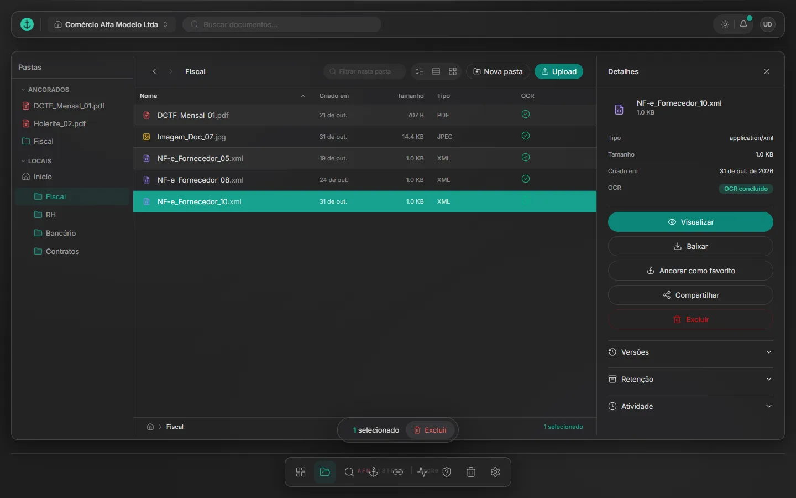

Docke
Documentos de varias empresas, con registro de auditoría.


En esta página: 01Por qué existe
Por qué existe
El grupo iba a migrar toda su documentación a la nube. Desarrollé Docke para esa migración, pensando en la rutina de los equipos: documentos separados por empresa, búsqueda en el texto digitalizado, plazos de obligaciones, conservación legal y registro de auditoría.
Problema, sistema y comprobación
Problema
Documentos de varias empresas por organizar en la nube, con plazos y conservación legal.
Sistema
Gestión electrónica de documentos para varias empresas: búsqueda en el texto digitalizado (OCR), plazos de obligaciones, conservación legal y registro de auditoría encadenado por hash.
Comprobación
89 pruebas
83 de backend y 6 de extremo a extremo, en GitHub Actions. Verificadas el 9/11/2026.
Por dentro
-
Panel de la empresa
Documentos, carpetas, anclados y envíos recientes de la empresa elegida, con los documentos por carpeta.
-
Carpetas con OCR
Cada carpeta lista los documentos con tipo, tamaño y la marca del OCR, que permite buscar dentro del texto digitalizado.
-
Registro de auditoría
Cada envío, visualización y descarga queda anotado en un registro encadenado por hash.
-
Barra de navegación
Inicio, documentos, búsqueda y anclados quedan al pie de la pantalla, como en una app de móvil, con el botón de envío arriba.


Cómo se construyó
Arquitectura
El frontend en React se comunica con una API en FastAPI, que guarda los datos en el PostgreSQL de Supabase y los archivos en Cloudflare R2. El navegador envía el archivo directamente a R2; la API solo confirma el envío y crea un job de OCR. Un worker en segundo plano lee el archivo, extrae el texto con Tesseract y lo graba en el documento, donde la búsqueda de texto completo de Postgres lo encuentra.
Ver en el código: README.md L37–51 documents.py L213–275 documents_service.py L166 ocr_worker.py L1–16 search_service.py L57–95
- Envío directo a R2
- Confirmación con SHA-256
- Cola de OCR
- Búsqueda en el texto
- Registro encadenado por hash
Decisiones técnicas
Aislamiento entre empresas en la propia base
Cada solicitud de usuario abre una transacción, pasa las claims del JWT a Postgres con
set_config('request.jwt.claims')y cambia el rol conSET LOCAL role authenticated. Así, las políticas de Row Level Security se aplican a toda consulta de esa conexión, y la propia base bloquea el acceso por empresa o por carpeta, no solo la API.SET LOCALsolo dura dentro de una transacción explícita, por eso toda la solicitud va en una. Las operaciones administrativas y el worker usan una conexión aparte, que ignora el RLS y comprueba el permiso en el código.Ver en el código: dependencies.py L251–288 README.md L20 README.md L50 20260627000003_rls_policies.sql dependencies.py L291–295
El archivo va directo al storage
El navegador envía el archivo a R2 mediante una URL prefirmada, en partes de 10 MB a partir de 20 MB. Después, la API comprueba el tamaño real con un HEAD, porque la URL no impone límite, y calcula el SHA-256. Si la empresa ya tiene un archivo idéntico, responde 409 y borra el objeto y el registro pendiente, para no dejar basura en el bucket.
Ver en el código: README.md L51 Documents.tsx L400–401 Documents.tsx L462–463 documents.py L224–266 storage_service.py L117–137 documents.py L321
OCR en una cola dentro de Postgres
La confirmación del envío graba un job en la tabla
ocr_jobs, y un worker toma el más antiguo conFOR UPDATE SKIP LOCKED, de modo que varios workers no se disputan el mismo job. Un job detenido en procesamiento durante más de 10 minutos vuelve a la cola, hasta 3 intentos; después quedafailed. Tesseract lee en portugués e inglés; en las imágenes, después de un preprocesamiento con OpenCV.Ver en el código: ocr_worker.py L1–35 ocr_worker.py L73–99 ocr_service.py L5 ocr_service.py L76
Desafío
El registro se verifica por sus enlaces
Cada evento guarda un HMAC-SHA256 calculado sobre su contenido y el hash del evento anterior de la empresa. La primera verificación ordenaba los eventos por hora y señalaba una cadena rota sin que hubiera alteración, porque los eventos de una misma transacción tienen la misma hora. Reescribí la verificación para seguir los enlaces a partir del primer evento. Faltaba aún el final: borrar el evento más reciente pasaba inadvertido; ahora el último hash grabado tiene que existir, o el registro aparece como truncado.
Ver en el código: 20260723000015_event_store_activity_log.sql L40–80 20261017000001_activity_log_verify_chain_by_links.sql L1–67 20261026000002_seguranca_rls_trilha_links.sql L47–51 20261026000002_seguranca_rls_trilha_links.sql L122–135 test_audit_chain.py L57–163
Pruebas
El backend tiene 83 pruebas recopiladas por pytest, que provienen de 30 funciones (tres están parametrizadas: una se ejecuta 50 veces y dos, 3 veces cada una); las de integración se ejecutan contra un Supabase local y cubren el aislamiento entre empresas mediante RLS, los permisos, el OCR, los enlaces para compartir y el registro señalando un evento alterado, borrado o cortado al final. Las 6 pruebas de Playwright inician sesión en la demostración, cambian de identidad, abren un PDF y buscan. GitHub Actions ejecuta ambas en cada push a main.
Ver en el código: tests e2e ci.yml e2e.yml test_demo_seed_templates.py L11
Stack y enlaces
Stack
React 19, TypeScript, Vite, Tailwind CSS, FastAPI, PostgreSQL (RLS), Supabase, Tesseract, pytest, Playwright